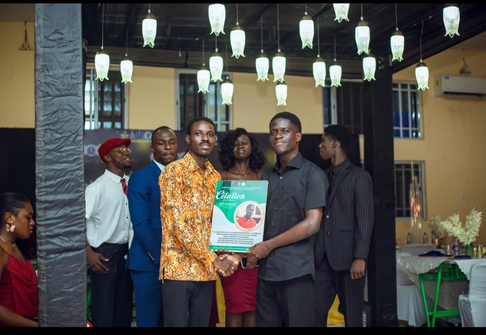

AMPONSAH KOFI
Founder,
Entrepreneur
& Creator.
A Ghanaian student entrepreneur building Plug — a marketplace designed around university life.

Student Entrepreneur of the Year · 2026KNUSTBSc Environmental Science
Student Entrepreneur of the Year2026
Building for studentsGhana · Africa
About me
The Builder.
I'm Amponsah Kofi, a Ghanaian student and entrepreneur studying Environmental Science at KNUST. I am interested in creating practical solutions to everyday problems and learning what it takes to build lasting businesses.
My current focus is Plug, a student marketplace. My longer-term interests include infrastructure, housing, environmental services and energy.
My venture
Plug.
Campus commerce, reimagined
Made for campus life.
Plug is a student marketplace being developed to make discovering products, connecting with sellers and accessing services around campus simpler.
In development · Ghana
Connect
Let's build
something meaningful.
For professional connections, conversations and collaborations, find me on these platforms.